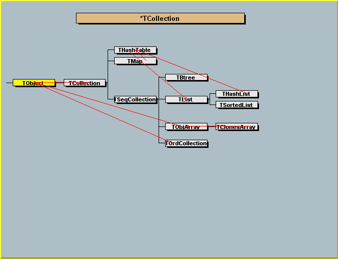
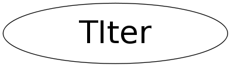

class TIter
Collection abstract base class. This class describes the base protocol all collection classes have to implement. The ROOT collection classes always store pointers to objects that inherit from TObject. They never adopt the objects. Therefore, it is the user's responsability to take care of deleting the actual objects once they are not needed anymore. In exceptional cases, when the user is 100% sure nothing else is referencing the objects in the collection, one can delete all objects and the collection at the same time using the Delete() function. Collections can be iterated using an iterator object (see TIterator). Depending on the concrete collection class there may be some additional methods of iterating. See the repective classes. TCollection inherits from TObject since we want to be able to have collections of collections. In a later release the collections may become templatized./*  */
Function Members (Methods)
public:
| TIter(TIterator* it) | |
| TIter(const TIter& iter) | |
| TIter(const TCollection* col, Bool_t dir = kIterForward) | |
| virtual | ~TIter() |
| TIter& | Begin() |
| static TClass* | Class() |
| static TIter | End() |
| const TCollection* | GetCollection() const |
| Option_t* | GetOption() const |
| virtual TClass* | IsA() const |
| TObject* | Next() |
| bool | operator!=(const TIter& aIter) const |
| TObject* | operator()() |
| TObject* | operator*() const |
| TIter& | operator++() |
| TIter& | operator=(const TIter& rhs) |
| void | Reset() |
| virtual void | ShowMembers(TMemberInspector& insp) |
| virtual void | Streamer(TBuffer& b) |
| void | StreamerNVirtual(TBuffer& b) |
protected:
| TIter() |
Data Members
private:
| TIterator* | fIterator | collection iterator |
Class Charts
{kind=link}
{kind=link}
{kind=link}
{kind=link}

Function documentation
TObject * operator()(const char *name)
const TCollection * GetCollection() const
{ return fIterator ? fIterator->GetCollection() : nullptr; }